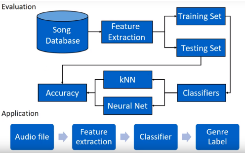

Music Genre Classification with Machine Learning
Introduction
We have created a music genre classifier by analysing the music/audio signal and provided guidelines and features such as genre, tempo, lyrics, mood, guitar chords, similar suggestions, etc. to aid in learning and recreating the piece. This will also help in better understanding of music, and generation of playlists to cluster similar music together.
Approaches
Features are extracted from the music sample dataset, split into training and testing and fed into some classifier function based on the task to be performed. (genre classification, chord identification, similar songs, etc.). This is done using DSP analysis using tools such as chord-gram, spectrogram, etc, and using features already provided.
This is then fed into a neural networks to learn the parameters responsible for genre classification.
Dataset
The tracks audio features are taken from the Million Song Dataset (MSD). This dataset contains music samples of 25 different genres. 50000 labelled examples (2000 per genre) are provided for training, with a further 10000 un-labelled examples (400 per genre) used for testing.
